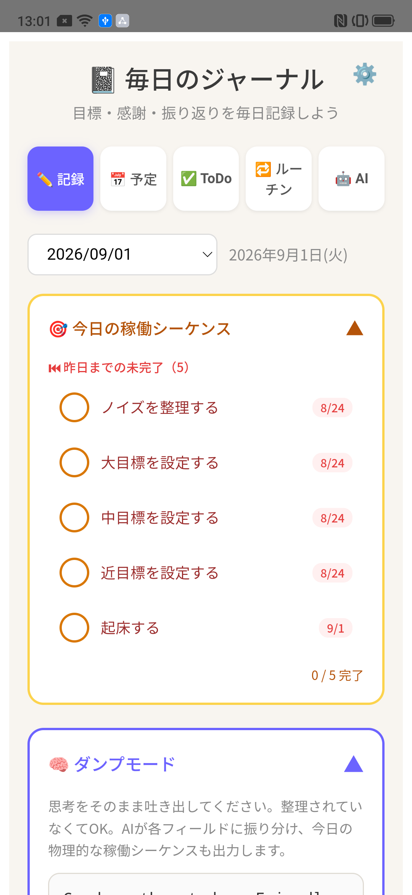
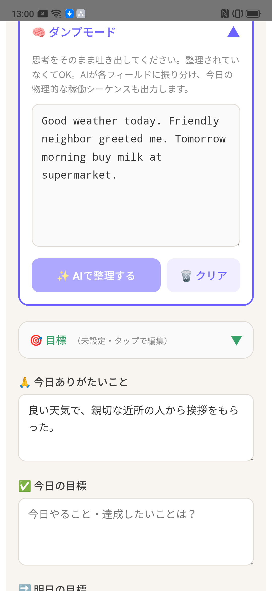
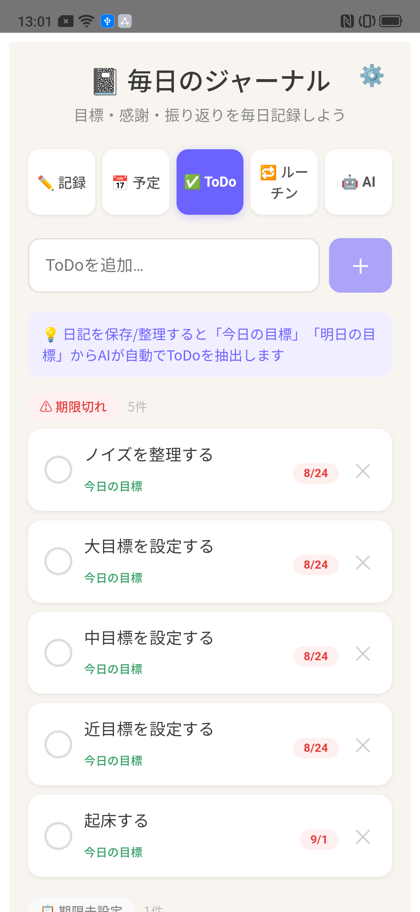
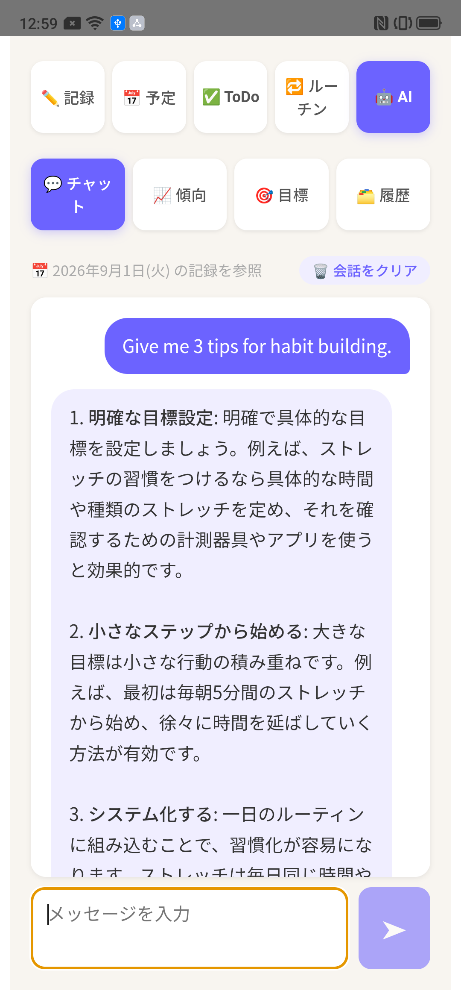

01
そのまま吐き出す
予定、気がかり、思いつき。順番も分類も気にせず、ダンプモードへ書きます。
朝の5分を、外部前頭葉に
組織を動かす人ほど、朝いちばんから判断が多い。EvJouは、考えを整えてから書く日記ではありません。思考をそのまま置き、今日やることへ変えていく、個人のためのジャーナルです。
インストール不要。ブラウザですぐに始められます。

朝、書くことで一日を始めたい人へ。
判断する立場でも、自分の頭を整える時間は必要だから。
MORNING FLOW
朝のノイズを入力し、今日の行動までつなげる。EvJouの中心は、この短い流れです。
予定、気がかり、思いつき。順番も分類も気にせず、ダンプモードへ書きます。
AIが使えるときは、感謝・今日の目標・明日の目標への振り分けとToDo抽出を手伝います。
今日と繰り越しのToDoを稼働シーケンスで確認。考え直す回数を減らします。
ONE PERSONAL SYSTEM
書いたことと、今日動くことが同じ場所にある。EvJouは、ジャーナル・ToDo・ルーチン・予定を、ひとりの毎日の流れとしてつなぎます。



AI, WHEN AVAILABLE
日記の振り分け、ToDo抽出、傾向や目標の分析、チャット。AIはEvJouを深く使うための強力な相棒です。一方で、記録そのものをAIに依存させていません。
LOCAL FIRST
アカウントやクラウド同期を前提にせず、まずは自分の端末で毎日使えることを優先しています。
登録フォームもログインもありません。開いたブラウザで、そのまま使い始められます。
日記・ToDo・ルーチンなどの基本データは、使っている端末のブラウザ内に保存されます。
AIが使えない時間も、書く・確認する・チェックするという毎日の動作は止まりません。
※ クラウド同期はありません。ブラウザの保存データを消去すると記録も消えるため、設定画面のエクスポートをご利用ください。AI機能を使う場合は、処理に必要な内容がAI連携経路へ送信されます。